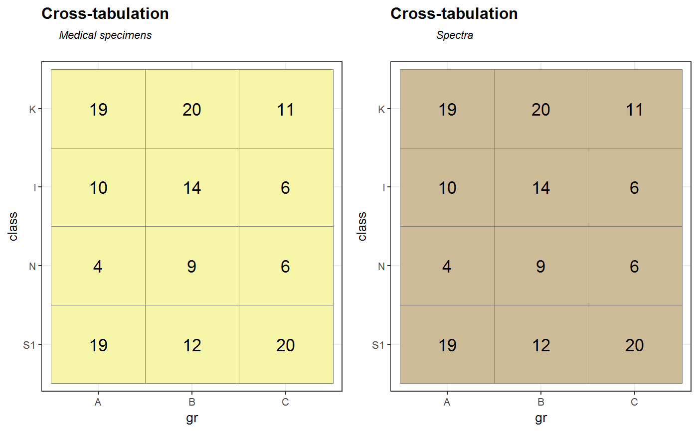
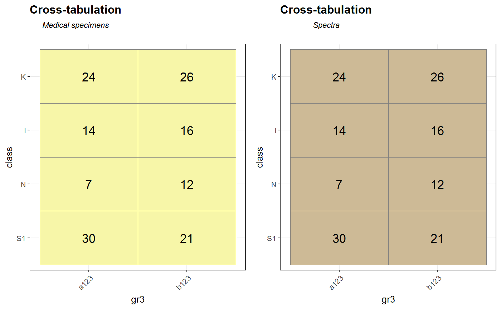

[!] Plot crosstab for 2 variables in hyperSpec object
gg_crosstab2(sp, x_var, y_var, xLabel = labels(sp, x_var), yLabel = labels(sp, y_var), ID_var = "ID", rotate.x.tick.labels = NULL, useNA = "ifany")
| sp |
|
|---|---|
| x_var, | y_var names of variables inside |
| xLabel, | yLabel labels for variables |
| ID_var | name of variable inside |
| rotate.x.tick.labels | Determine if x axis tick labels should be rotated
in 45 degrees angle (to avoid overlapping). Possible valued |
| useNA | whether to include |
2 ploted crosstabs: first for number of medical samples, second for number of spectra.
library(spHelper) gg_crosstab2(Spectra2,"gr","class", ID_var = NULL)Spectra2$gr3<- c("a123", "b123") gg_crosstab2(Spectra2,"gr3","class", ID_var = NULL)